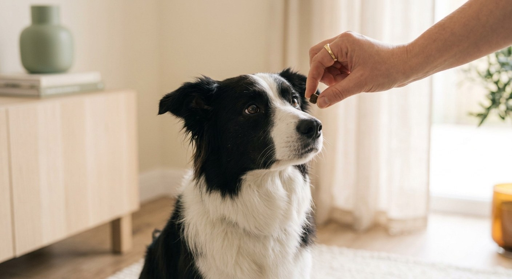
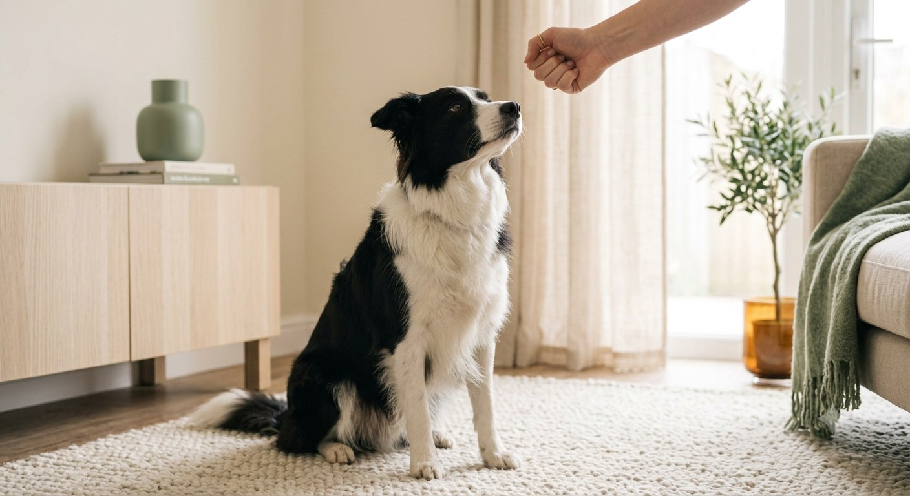
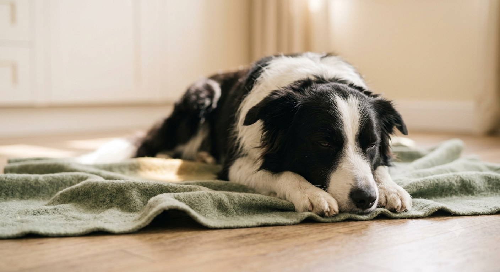
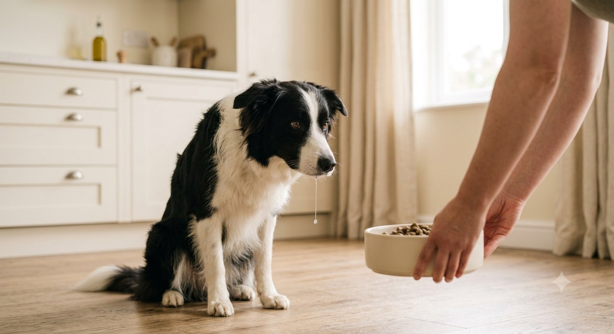
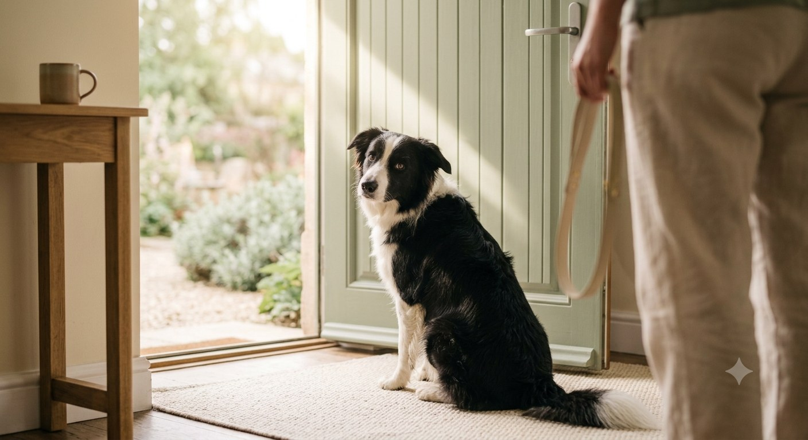
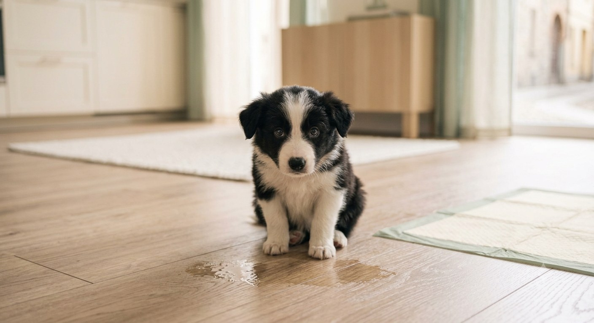
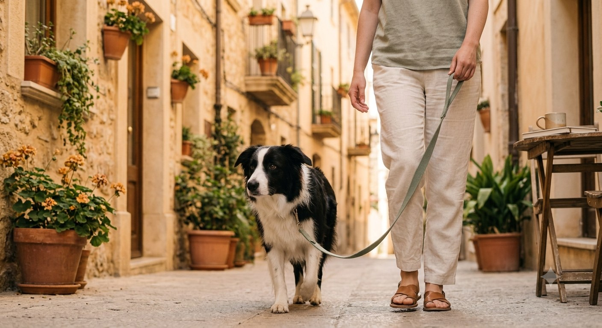
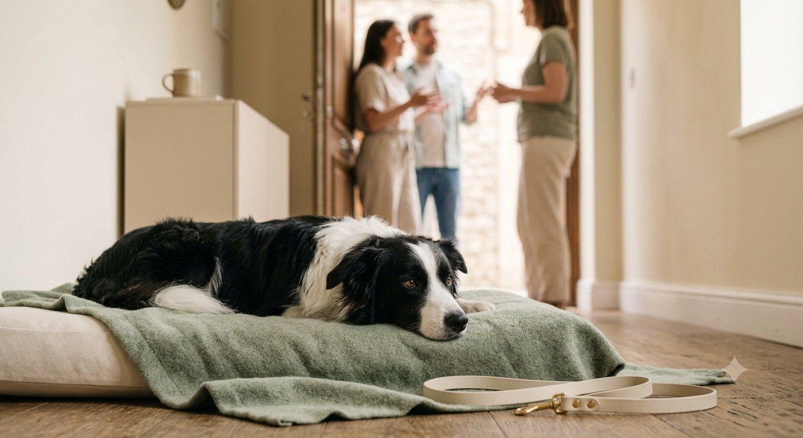

Il primo educatore cinofilo che è un cane
Il Metodo
Argo
21 giorni per capirvi, finalmente.
Ebook + Tracker dei 21 giorni + Area membri
🐾 ilmetodoargo
Impara queste parole: le useremo sempre
Il linguaggio
del Metodo Argo
⏱️ La Finestra di Argo
Il secondo — UNO — che hai per premiare il comportamento giusto. Dopo, per il cane stai premiando un'altra cosa. Tutto il metodo gira intorno a questa finestra.
💣 L'Artiglieria di Argo
I premi di altissimo valore (pollo, würstel, formaggio) riservati alle situazioni difficili. In casa bastano le crocchette; al parco coi piccioni serve l'artiglieria.
👀 Gli Occhi di Argo
Guardare il cane per quello che sta dicendo, non per quello che «dovrebbe» fare. Orecchie, coda, postura: parla di continuo — è che nessuno lo ascolta.
🔑 La parola di libertà
«Ok!» — la parola che chiude ogni attesa e ogni esercizio. Senza un via chiaro, il cane non sa mai quando può smettere di lavorare.
I box che troverai in ogni giorno
🎯 Missione del giorno
L'esercizio, passo per passo. È la cosa da FARE oggi.
🧠 Dietro le quinte
Cosa succede nel cervello del tuo cane mentre fate l'esercizio — il perché che nessun video di YouTube ti spiega.
⚠️ Errore umano
Lo sbaglio che fanno quasi tutti in questo esercizio. Se lo conosci, non ci caschi.
🚑 Pronto soccorso
«E se il cane…?» — le situazioni reali e come uscirne, caso per caso.
📈 Alzare l'asticella
Quando e come aumentare la difficoltà — e come capire se l'esercizio è riuscito.
💡 Lo sai che…
Una cosa vera su noi cani che non sapevi. Per fare bella figura ai giardinetti.
La visione d'insieme
La mappa
dei 21 giorni
Fase 1 · Fondamenta · giorni 1–7
Il linguaggio comune, uguale per tutti: il patto → il nome → il marker → il seduto → la calma → l'autocontrollo → il tagliando. Ogni giorno costruisce sul precedente: l'ordine non è casuale.
Fase 2 · Il tuo modulo · giorni 8–16
Nove giorni sul VOSTRO problema, uno dei cinque profili: Il Trattore (guinzaglio) · Lo Squalo (morsi del cucciolo) · L'Esploratore Sordo (richiamo) · Il Velcro (solitudine) · Il Tornado (autocontrollo). In questo libro trovi l'identikit completo, i primi esercizi e la roadmap; il giorno-per-giorno interattivo è nell'area membri.
Fase 3 · Consolidamento · giorni 17–21
Dal salotto al mondo: posti nuovi → distrazioni → ospiti → vita vera → diploma. È qui che gli esercizi diventano abitudini.
Quello che vedi
Ventuno giorni di esercizi.
Quello che succede
Una nuova lingua condivisa, un giorno alla volta. Il giorno 22 non tornerete quelli di prima.
💡 Lo sai che…
Servono in media 18–66 giorni per consolidare un'abitudine — nei cani come negli umani. I nostri 21 giorni sono il cuore del lavoro: il piano di mantenimento (ultima pagina) fa il resto.
Una cosa seria
Quando non basto io.
Detto da un cane serio.
Io sono bravo, ma sono un ebook. E ci sono cose che un ebook — anche scritto da un cane — non deve toccare:
⚠️ Il Metodo Argo NON tratta
- Aggressività verso persone o altri cani (ringhi seri, morsi, minacce)
- Paure intense, fobie, traumi
- Qualunque questione di salute, alimentazione o farmaci
In questi casi serve un professionista in carne e ossa: un educatore cinofilo certificato o un veterinario comportamentalista, che veda il cane dal vivo. Non è un ripiego: è l'unico strumento giusto per quel lavoro.
🟢 Regola di Argo
Se durante un esercizio il cane si irrigidisce, ansima, si lecca il muso di continuo o cerca di evitare — fermati. Sta usando il suo linguaggio per dirti «troppo, troppo in fretta». Un passo indietro non è mai una sconfitta: è ascolto. Ricorda gli Occhi di Argo.
💡 Lo sai che…
Il «cane che fa i dispetti per vendetta» non esiste: la vendetta richiede una memoria episodica e una teoria della mente che non abbiamo. Se distruggo il divano, sto gestendo un'emozione — di solito noia o ansia. Il dispetto è una storia che vi raccontate voi umani.
Giorni 1–7 · uguale per tutti
Fase 1
Fondamenta
Sette giorni per costruire il linguaggio comune: il nome che funziona, la parola magica, la calma su richiesta, l'autocontrollo. Sembrano esercizi piccoli. Sono le fondamenta di tutto quello che verrà.
«Prima di insegnarmi qualcosa,
impara ad ascoltarmi.»
1
Il patto
Prima di insegnarmi qualcosa, guardami.
Giorno 1 di 21
Fase 1 · Fondamenta
Oggi non mi insegni niente. Lo so, non vedevi l'ora. Ma il primo giorno serve a te, non a me: devi capire chi hai davanti.
Sai cosa penso quando un umano compra un libro di educazione e parte subito coi comandi? Penso a uno che entra in un paese straniero e inizia a dare ordini senza aver ascoltato una parola della lingua locale. Oggi si ascolta. Domani si parla.
🎯 Missione del giorno
- Osservami in 3 momenti (mattina, pomeriggio, sera), 5 minuti l'uno, senza chiedermi niente. Scrivi sul tracker: dove si mette? Cosa guarda? Quando si agita? Quando si rilassa davvero?
- Riunisci la famiglia e decidete 3 regole della casa, chiare e uguali per tutti: divano sì o no? Cibo dal tavolo sì o no? Salta addosso agli ospiti sì o no?
- Scrivetele sul tracker, firmate tutti. Sembra una cerimonia sciocca: non lo è.
🧠 Dietro le quinte
Il tuo cane ti osserva da sempre: conosce il rumore delle tue chiavi, la differenza tra le scarpe del lavoro e quelle della passeggiata. Oggi inverti i ruoli e cominci a costruire i tuoi Occhi di Argo: la capacità di leggere orecchie, coda e postura. E c'è di più: le regole incoerenti sono il motivo n.1 per cui i cani «non ascoltano». Se tu dici no e tua figlia dice sì, io non divento confuso — divento strategico: imparo CHI dice sì.
⚠️ Errore umano
Volere risultati il giorno 1. L'umano medio salta l'osservazione («tanto il mio cane lo conosco») e parte coi comandi. Poi al giorno 10 si chiede perché il cane «funziona» solo quando ha il premio in mano. Le fondamenta non si vedono, ma reggono la casa.
🚑 Pronto soccorso
- «Mi segue ovunque, non riesco a osservarlo!» — Perfetto, hai già la prima nota per il tracker: potrebbe esserci un Velcro in casa. Osservalo mentre fai altro: la vera osservazione è di sottecchi.
- «La famiglia non è d'accordo sulle regole.» — Meglio scoprirlo oggi che al giorno 15. Negoziate: 3 regole condivise valgono più di 10 regole ignorate.
- «Il mio cane non fa niente di strano.» — Guarda più fino: quando sbadiglia senza sonno? Quando si lecca il muso? Sono segnali di tensione che il 90% degli umani non vede.
📈 Com'è andata?
Riuscito se: hai almeno 6 note scritte sul tracker e 3 regole firmate da tutti. Se non ci sei riuscito: nessun dramma — l'osservazione continua domani in parallelo al primo esercizio. Ma le 3 regole servono stasera: senza quelle non si parte.
🐾Variante cucciolo: se ha meno di 6 mesi, aggiungi alle osservazioni gli orari di pipì, pasti e sonno. Ti serviranno per il bonus SOS Pipì — e ti salveranno il parquet.
- La checklist di oggi
- Osservato in 3 momenti diversi, con note scritte
- 3 regole della casa decise e firmate da tutti
- Tracker stampato e attaccato al frigo
💡 Lo sai che…
Un cane adulto dorme 12–14 ore al giorno, un cucciolo fino a 18–20. Se il tuo cane è sempre «su di giri», la prima domanda giusta non è «come lo calmo?» ma «sta dormendo abbastanza?».
2
Il mio nome non è «No»
Quando mi chiami, vinco qualcosa.
Giorno 2 di 21
Fase 1 · Fondamenta
Sai qual è la parola che sento più spesso? «No». A volte penso sia il mio secondo nome. Oggi sistemiamo la cosa più importante di tutte: quando dici il mio nome, io mi volto verso di te. Non per magia — perché conviene.
Noi cani non «sappiamo» il nostro nome come lo sapete voi. Per noi è un suono, e un suono vale quanto ciò che lo segue. Nome → cose belle = suono da non perdersi. Nome → sgridata = suono da cui sparire.

🎯 Missione del giorno — il gioco del nome (5 min × 3)
- Stanza tranquilla, premietti piccoli in tasca (crocchette: qui non serve l'Artiglieria).
- Di' il mio nome UNA volta, con voce allegra.
- Appena giro la testa verso di te: premio dentro la Finestra di Argo — un secondo, non di più.
- Non mi giro? Non ripetere il nome: avvicinati, riduci la distanza, riprova più facile.
- 10 ripetizioni, pausa, poi seconda e terza sessione in momenti diversi della giornata.
🧠 Dietro le quinte
Si chiama condizionamento classico: il cervello del cane collega il suono del nome all'arrivo di qualcosa di buono, e dopo poche decine di ripetizioni il collegamento diventa automatico — non una scelta, un riflesso. È lo stesso meccanismo per cui ti si muove lo stomaco quando senti il tintinnio delle posate. Tu non «decidi» di avere fame: succede. Ecco cosa stiamo costruendo col nome.
⚠️ Errore umano
Il «disco rotto»: Rex. Rex! REX!! REEEX!!! Ogni ripetizione a vuoto insegna al cane che il nome si può ignorare — le prime tre volte non succede mai niente. E la seconda versione dell'errore è peggio: usare il nome per sgridare. Ogni «REX!» arrabbiato svuota il conto in banca che stai riempiendo con i premi.
🚑 Pronto soccorso
- «Non si gira proprio.» — Sei troppo lontano o c'è troppo rumore. Mettiti a due passi, stanza silenziosa. Ancora niente? Premio migliore: passa all'Artiglieria.
- «Ignora il premio.» — O non ha fame (sessione prima dei pasti, non dopo) o è troppo agitato per mangiare: ambiente più calmo, riprova.
- «Si gira ma poi si lancia addosso.» — Premia a terra, lanciando il premietto tra le sue zampe invece che dalla mano.
- «In casa perfetto, in giardino sordo.» — Normale: è il capitolo della generalizzazione, giorno 17. Per ora vinci in casa.
📈 Alzare l'asticella
Riuscito se: in casa si gira 8 volte su 10 al primo richiamo del nome. Quando ci sei: aumenta la distanza (altra stanza), poi aggiungi distrazioni leggere (TV accesa, qualcuno che cammina). Un gradino alla volta: se sbaglia due volte di fila, l'asticella è troppo alta — torna al gradino prima.
🐾Variante cucciolo: sessioni da 2 minuti, non 5 — l'attenzione di un cucciolo è una farfalla. Variante adulto «rovinato»: se il nome è ormai bruciato da anni di sgridate, valuta di ricominciare con un nomignolo nuovo di zecca: funziona.
- La checklist di oggi
- Sessione 1 · Sessione 2 · Sessione 3
- Premio sempre dentro la Finestra di Argo (1 secondo)
- Nessuno oggi ha usato il nome per sgridare
3
La parola magica
Il marker: «esatto, proprio quello!» al momento giusto.
Giorno 3 di 21
Fase 1 · Fondamenta
Il tuo problema non è che io non capisco. È che me lo dici tardi. Ti muovi, cerchi il premio in tasca, ti chini… e nel frattempo io ho già fatto altre quattro cose. Quale delle cinque stavi premiando? Boh.
Oggi impari il marker: una parola breve — «Sì!» va benissimo — detta nell'istante esatto del comportamento giusto, sempre seguita dal premio. Il marker congela il tempo: da oggi la Finestra di Argo ce l'hai in tasca.

🎯 Missione del giorno — «carica il Sì» (5 min × 3)
- Di' «Sì!» e dammi subito un premietto. Non devo fare niente: sto imparando che «Sì» = premio in arrivo. Garantito, sempre.
- Ripeti 10 volte. Pausa. Ripeti in un'altra stanza.
- Dal pomeriggio, caccia grossa: di' «Sì!» solo quando mi becchi a fare qualcosa di giusto — seduto da solo, calmo sulla coperta, ti guardo — e premia subito.
🧠 Dietro le quinte
Il marker è un ponte temporale: allunga la Finestra di Argo quanto ti serve. Il «Sì!» arriva in 0,3 secondi ed è lui che fotografa il comportamento; il premio può arrivare anche 3 secondi dopo, il cervello del cane ha già registrato COSA ha funzionato. È la stessa tecnologia del clicker dei professionisti — solo che la tua voce ce l'hai sempre con te. Precisione da chirurgo, attrezzatura zero.
⚠️ Errore umano
Dire «Sì!» e poi — niente premio («tanto ormai ha capito»). Ogni Sì a vuoto svaluta la parola, come una banconota stampata senza oro dietro: tre o quattro assegni scoperti e il cane smette di crederci. Nella fase di costruzione il cambio è fisso: un Sì = un premio. Sempre.
🚑 Pronto soccorso
- «Al Sì non reagisce.» — Troppe poche ripetizioni: rifai la carica del mattino, 20 ripetizioni, premio top.
- «Si eccita troppo quando lo dico.» — Perfetto, la parola funziona! Abbassa il tono: «Sì» detto calmo, non urlato da stadio.
- «In famiglia ognuno dice una parola diversa.» — Riunione lampo: UNA parola per tutti. «Sì», «Bravo», va bene tutto — purché sia una sola.
- «Ho detto Sì al momento sbagliato.» — Capita a tutti: paga comunque il premio (il contratto è sacro) e mira meglio la prossima volta.
📈 Alzare l'asticella
Riuscito se: al «Sì!» il cane si volta di scatto verso di te aspettando il premio — quello sguardo è il segno che il ponte è costruito. Da domani: il marker entra in ogni esercizio del metodo. Il gioco «caccia al comportamento giusto» invece non finisce mai: 5 Sì «a sorpresa» al giorno, per sempre.
Quello che vedi
Un umano che dice «Sì» a un cane.
Quello che succede
Una macchina fotografica: il «Sì» scatta la foto del comportamento giusto, il premio la stampa.
- La checklist di oggi
- Carica del marker: 2 sessioni da 10 ripetizioni
- Almeno 5 comportamenti spontanei «fotografati» col Sì
- Ogni Sì ha avuto il suo premio, nessun assegno scoperto
4
Seduto (ma sul serio)
Non il seduto da circo. Il seduto che mi calma.
Giorno 4 di 21
Fase 1 · Fondamenta
«Ma il mio cane il seduto lo sa già!» Sì, lo so anch'io. Lo sappiamo tutti. Il punto non è sapere il seduto: è scegliere di sedersi quando intorno succedono cose.
Da oggi sedersi diventa il mio modo di dire «per favore»: prima della ciotola, del guinzaglio, della porta. Voi lo chiamate comando. Dal mio punto di vista è un'altra cosa: un modo per ottenere quello che voglio senza impazzire. Affare fatto.

🎯 Missione del giorno (5 min × 3)
- Premietto nel pugno chiuso, sopra il mio naso: spostalo lentamente indietro, sopra la mia testa. La testa sale, il sedere scende: fisica canina.
- Sedere a terra? «Sì!» + premio.
- Dopo 5 riuscite: via il premio dalla mano, resta solo il gesto. «Sì!» + premio dall'altra mano.
- Solo quando il gesto funziona 8 volte su 10, aggiungi la parola «seduto» PRIMA del gesto. Parola → gesto → sedere a terra → Sì → premio.
🧠 Dietro le quinte
Perché prima il gesto e poi la parola? Perché noi cani siamo una specie che comunica col corpo: leggiamo un movimento di mano mille volte meglio di un suono. La parola da sola, all'inizio, è rumore. La sequenza giusta è: movimento guidato → gesto → parola — ogni passaggio si appoggia sul precedente. Chi parte dalla parola costruisce il tetto prima dei muri.
⚠️ Errore umano
Due classici: il disco rotto («seduto-seduto-SEDUTO») — la parola si dice una volta, se non funziona l'esercizio è troppo difficile, non il cane troppo stupido. E la spinta sul sedere: costringe il corpo, non insegna niente alla testa. Un seduto spinto è un seduto subìto; un seduto scelto è un seduto imparato.
🚑 Pronto soccorso
- «Salta verso la mano col premio.» — Mano troppo alta: tienila a un dito dal naso, muovila piano.
- «Indietreggia invece di sedersi.» — Fai l'esercizio con un muro o il divano alle sue spalle: la retromarcia finisce, il sedere si siede.
- «Si sdraia direttamente.» — Entusiasmo da premiare comunque la prima volta! Poi marca un attimo prima: nel momento in cui il sedere tocca, «Sì!».
- «Vive in appartamento, si siede solo in cucina.» — Ripeti l'esercizio in ogni stanza: per noi «seduto-in-cucina» e «seduto-in-salotto» sono due esercizi diversi. Davvero.
📈 Alzare l'asticella
Riuscito se: si siede col solo gesto 8/10, senza premio in mano. Poi: attiva il «per favore»: seduto prima della ciotola, del guinzaglio, della porta — la vita quotidiana diventa la palestra. Se non funziona dopo 3 giorni: resta al passo del gesto, la parola può aspettare: nessuno vi corre dietro.
🐾Variante adulto anziano: se il tuo cane ha anche o schiena delicate, il seduto ripetuto può dare fastidio — pochi seduti, e se esita sempre, prima una parola col veterinario.
- La checklist di oggi
- Seduto guidato (lure) → poi con il solo gesto
- Primo «per favore»: seduto prima della ciotola
- Parola detta una volta sola, sempre
5
L'arte di non fare niente
Il relax su comando esiste. E ti cambierà la vita.
Giorno 5 di 21
Fase 1 · Fondamenta
Gli umani pensano che educare un cane significhi insegnargli a FARE cose. Poi vivono con un cane che non sa STARE. Oggi lavoriamo sul terra rilassato: sdraiarsi e mollare la tensione mentre la vita va avanti.
Noi cani non nasciamo zen. L'attesa tranquilla è un'abilità, come il richiamo — e nessuno la insegna, perché «tanto è solo un cane sdraiato». È l'esercizio più sottovalutato del mondo: ospiti, ristorante, ufficio, sere sul divano. Lo userai per sempre.

🎯 Missione del giorno — la coperta (10 min × 2)
- Stendi una coperta o un tappetino: quello è il mio posto. Solo mio.
- Portami sopra con un premietto e aspetta che mi sdraio da solo. Non dire niente. Aspetta. (Sì, anche 3 minuti. Respira.)
- Appena giù: premio tra le zampe, lento, senza festa. Qui si celebra sottovoce.
- Resto giù? Ogni tanto un premio tra le zampe. Mi alzo? Zero drammi: aspetta che ci ritorni.
- Fine sessione: «Ok!» — la parola di libertà — e via la coperta.
🧠 Dietro le quinte
Stai facendo due cose insieme. Uno: premi una POSIZIONE, e il cane impara che «giù sulla coperta» è una slot machine che paga. Due — la parte magica: la postura influenza l'emozione. Un corpo disteso a lungo abbassa davvero l'attivazione: respiro più lento, muscoli molli. Non stai addestrando un cane a stare fermo: stai insegnando al suo sistema nervoso com'è fatta la calma.
⚠️ Errore umano
La fretta e la festa. La fretta: dare il comando «terra!» invece di aspettare la scelta — un terra comandato è obbedienza, un terra scelto è rilassamento, e a noi serve il secondo. La festa: premiare con voce squillante e carezze energiche… ed ecco che il cane si rialza carico come una molla. Sulla coperta si parla come in biblioteca.
🚑 Pronto soccorso
- «Non si sdraia mai.» — Sessione dopo la passeggiata, non prima: un cane carico non si molla. E premia i passi intermedi: prima lo stare sulla coperta, poi il seduto, poi il terra.
- «Mordicchia la coperta.» — È tensione o noia: accorcia la sessione e premia più spesso all'inizio.
- «Si sdraia ma fissa la mia tasca dei premi.» — Normale all'inizio. Diventerà calma vera col tempo: cerca di premiare quando lo sguardo si ammorbidisce.
- «Appena mi muovo io, si alza.» — Per ora resta vicino. Il «tu ti muovi, lui resta» è l'asticella di domani, non di oggi.
📈 Alzare l'asticella
Riuscito se: si sdraia da solo entro un minuto e resta giù 30 secondi. Scala della coperta: ① durata (1 → 5 minuti) ② tu ti sposti di due passi ③ tu ti siedi a fare altro ④ piccole distrazioni (TV, qualcuno entra). Un gradino per volta, e la coperta vi seguirà ovunque: dai nonni, in vacanza, al bar.
💡 Lo sai che…
Il «sospiro» che facciamo quando ci sdraiamo del tutto — quello sbuffo lungo dal naso — è un segnale fisiologico di rilassamento. Se lo senti durante l'esercizio della coperta, hai appena vinto la giornata.
- La checklist di oggi
- Coperta scelta e usata solo per questo
- Si è sdraiato da solo almeno una volta
- Premi dati tra le zampe, con calma da biblioteca
6
Aspetta, che fretta c'è
La ciotola, la porta, e io che imparo a scegliere.
Giorno 6 di 21
Fase 1 · Fondamenta
Ti svelo un segreto di noi cani: l'autocontrollo non ce l'abbiamo di fabbrica. Si installa. E si installa senza dire una parola: niente «no», niente «aspetta» urlato. Solo conseguenze, pulite come un meccanismo: la fretta allontana quello che voglio, la calma lo avvicina.


🎯 Missione 1 — la ciotola paziente
- Preparo la ciotola. Il cane balla il tip tap: previsto.
- Abbassala lentamente: se si lancia, la ciotola risale. In silenzio totale.
- Arriva a terra solo se resta seduto.
- «Ok!» → si mangia. A ogni pasto, da oggi in poi.
🎯 Missione 2 — la porta (× 2 oggi)
- Mano sulla maniglia: si abbassa solo se il cane è seduto.
- Scatta verso la porta? La porta si richiude. Zero commenti.
- Ripeti finché resta seduto a porta aperta.
- «Ok!» → si esce. La calma apre le porte. Letteralmente.
🧠 Dietro le quinte
L'autocontrollo è un muscolo, e questi sono i suoi pesi. Il cane sta imparando a inibire un impulso — una delle cose più difficili per un cervello giovane, canino o umano. Nota il silenzio: se dici «aspetta!» stai controllando tu al posto suo. Il silenzio lo costringe a fare i conti da solo: «se scatto risale, se sto fermo scende». Quella, dal mio punto di vista, non è obbedienza: è intelligenza.
⚠️ Errore umano
Cedere «solo per oggi». Se la ciotola una volta scende anche quando si lancia, hai creato un rinforzo intermittente — la slot machine: pagare ogni tanto, a caso, rende un comportamento praticamente indistruttibile. È il motivo per cui il cane che «a volte» ottiene le cose saltando addosso non smette mai. Le regole del gioco valgono a ogni pasto, anche quando hai fretta. Soprattutto quando hai fretta.
🚑 Pronto soccorso
- «Alla ciotola impazzisce, non si siede proprio.» — Criterio più basso: all'inizio basta che le quattro zampe restino a terra. Il seduto arriva domani.
- «Abbaia mentre aspetta.» — La ciotola scende solo dopo 2 secondi di silenzio. Il conteggio riparte a ogni abbaio: capirà in fretta.
- «Alla porta si eccita perché porta = passeggiata!» — Fai finte: apri, chiudi, e non esci. La porta smette di essere un pronostico infallibile e l'agitazione cala.
- «Vivo in appartamento: la porta dà sull'ascensore.» — Vale doppio: ripeti l'esercizio anche davanti all'ascensore. Le attese in spazi stretti sono oro.
📈 Alzare l'asticella
Riuscito se: a fine giornata la ciotola arriva a terra al primo tentativo, e la porta si apre col cane seduto. Poi: allunga l'attesa (2 → 5 → 10 secondi prima dell'«Ok!»), e porta la regola fuori: seduto prima di scendere dall'auto, seduto prima del guinzaglio. Ogni attesa vinta è benzina per la Fase 2.
- La checklist di oggi
- Ciotola paziente a entrambi i pasti, in silenzio
- Esercizio della porta × 2
- «Ok!» sempre, come parola di libertà
💡 Lo sai che…
Nei test di autocontrollo, i cani che avevano già «lavorato di testa» resistevano meno alla tentazione: l'autocontrollo si esaurisce come una batteria, anche il vostro. Per questo le sessioni brevi non sono un vezzo: sono scienza.
7
Il tagliando
Ripasso generale: le fondamenta reggono?
Giorno 7 di 21
Fase 1 · Fondamenta
Una settimana insieme. Se sei arrivato fin qui, sei già nel 20% degli umani che non mollano — io lo sapevo, comunque. Oggi niente esercizi nuovi: oggi si collauda. E si collauda col sorriso: questo è un tagliando, non un esame di maturità.
🎯 Missione del giorno — il test delle fondamenta (10 min)
- Nome: dillo una volta mentre guarda altrove. Si gira? ✔
- Marker: di' «Sì!» — si volta verso di te aspettando il premio? ✔
- Seduto: solo gesto, senza premio in mano. Si siede? ✔
- Coperta: lo porti sul posto, ti allontani di due passi. Resta giù 30 secondi? ✔
- Attesa: resta seduto finché non dici «Ok» a ciotola e porta? ✔
📈 Come leggere il risultato
4–5 su 5 — Fondamenta solide: da domani si entra nel TUO modulo. 🎉
2–3 su 5 — Normale. Oggi rifai gli esercizi zoppicanti; domani si parte lo stesso.
0–1 su 5 — Riparti dal giorno 2 e prenditi due giorni in più. I 21 giorni sono una guida, non un ultimatum: meglio arrivare al giorno 23 con fondamenta vere.
🧠 Dietro le quinte
Il ripasso non è tempo perso: ogni ripetizione riuscita consolida la traccia in memoria, e il sonno della notte fa il resto — sì, il cane «studia» dormendo, proprio come voi. Ecco perché un esercizio impossibile la sera diventa facile la mattina dopo. La scienza consiglia: allenati, poi lascialo dormire sopra.
🐾Da domani si fa sul serio: si lavora sul MIO problema. Anzi, sul nostro. Vai alla pagina del tuo profilo — quello che ti ha assegnato il quiz — e leggi tutto, anche i profili degli altri: capirai meglio anche il tuo.
- La checklist di oggi
- Test delle 5 fondamenta fatto e segnato sul tracker
- Esercizi zoppicanti ripassati
- Festa per la prima settimana: meritata da entrambi
«Insegnare a un cane a non fare niente
è la cosa più difficile e più preziosa
che imparerete insieme.»
— Argo, giorno 5
Giorni 8–16 · su misura
Fase 2
Il tuo modulo
Ogni cane ha il suo capitolo. Nelle prossime pagine trovi i cinque profili del Metodo: per ciascuno l'identikit completo, cosa succede nella sua testa, gli errori che lo peggiorano, i primi esercizi da fare subito e la roadmap dei 9 giorni.
Leggi bene il TUO profilo — quello del quiz — ma non saltare gli altri: i cani veri sono sempre un po' un mix.
«Non esistono cani difficili.
Esistono manuali generici.»
🚜Il Trattore
Al guinzaglio, quello portato a spasso sei tu.
Ti riconosci? Tre scene dal vero:
- Tira appena esce di casa — i primi 200 metri sono un rodeo: troppa energia accumulata e un mondo di odori tutto insieme.
- Tira quando vede un altro cane — non è (solo) maleducazione: è un picco emotivo, e il guinzaglio teso lo amplifica.
- Tira solo al ritorno — sa dove si va e vuole arrivarci: la casa è il premio, e tirare l'ha sempre avvicinata.
Scene diverse, stessa regola imparata: il guinzaglio teso funziona.
🧠 Dietro le quinte — perché tira
Primo: ogni passo avanti ottenuto tirando è un premio incassato — mi hai insegnato tu che è la strategia giusta, senza volerlo. Secondo: esiste il riflesso di opposizione — a una pressione, il corpo del cane risponde spingendo in direzione contraria. Più il guinzaglio tira indietro, più io spingo avanti. È un circolo: tu tiri, io tiro, tu tiri più forte. Qualcuno deve smettere per primo, e ha i pollici.
⚠️ Errore umano
Lo strattone «correttivo»: dà al cane un motivo in più per tenere il guinzaglio teso (riflesso di opposizione, di nuovo) e associa la tua presenza a uno strappo al collo. E il collare a strozzo? Dal mio punto di vista: dolore al posto di comunicazione. Non è il metodo — e nemmeno necessario.
🏁 L'obiettivo dei 9 giorni
La passeggiata col guinzaglio a J — molle, che disegna una curva morbida tra voi due — anche davanti alle distrazioni. Non un cane al piede militare: un cane che sceglie di camminare con te perché conviene.
🎯 Da fare già oggi — «il semaforo»
- Procurati l'attrezzatura giusta: pettorina ad H + guinzaglio da 2–3 metri (non flexi). Distribuisce la pressione e cambia subito la fisica del problema.
- In passeggiata, una regola sola: guinzaglio teso = ti fermi. In silenzio, come un semaforo rosso. Non uno strattone: una statua.
- Guinzaglio molle (anche per caso)? «Sì!» + si riparte. Camminare È il premio.
- Porta l'Artiglieria: ogni sguardo spontaneo verso di te mentre cammina, «Sì!» + premio all'altezza della tua gamba.
🚑 Strategie iniziali
- Scarica prima, cammina dopo: 10 minuti di gioco in casa o in cortile prima della passeggiata «didattica». Un Trattore a serbatoio pieno non impara.
- Percorsi noiosi all'inizio: strade tranquille, sempre le stesse. La novità è benzina per il tiro.
- Sessioni brevi: 10 minuti di lavoro sul guinzaglio, poi passeggiata «libera» (annusa quanto vuole, entro il guinzaglio lungo). Metà scuola, metà vacanza.
La roadmap dei tuoi 9 giorni
- G. 8Perché tiro (spoiler: funziona) — capire il meccanismo e azzerare i rinforzi involontari
- G. 9L'attrezzatura giusta — pettorina, guinzaglio lungo, e come si tiene in mano
- G. 10Il guinzaglio molle paga — il semaforo diventa un gioco a punti
- G. 11Un metro alla volta — costruire i primi 10 passi perfetti
- G. 12Cambio di direzione — la tecnica dolce per i punti difficili
- G. 13La via di casa — vincere il tiro «di ritorno»
- G. 14Distrazioni al guinzaglio — cani, gatti, piccioni: la scala delle tentazioni
- G. 15La passeggiata vera — tutto insieme, nel percorso di ogni giorno
- G. 16Test del Trattore — guinzaglio a J per 10 minuti reali
📱 Il giorno-per-giorno completo, con video e checklist interattive, ti aspetta nell'area membri.
🦈Lo Squalo
Dentini ovunque: mani, caviglie, ciabatte.
Ti riconosci? Tre scene dal vero:
- Morde le mani appena giochi — per un cucciolo la bocca È il gioco: nessuno gli ha ancora spiegato che la pelle umana è fuori menu.
- Attacca caviglie e pantaloni quando cammini — il movimento accende l'istinto di caccia: sei la preda più divertente della casa.
- Morde di più la sera — non è cattiveria, è stanchezza: un cucciolo esausto è uno squalo peggiore, come un bambino oltre l'orario del sonno.
Tutto normale. Tutto educabile — se lo guidi adesso.
🧠 Dietro le quinte — perché morde
La bocca è la nostra mano: esploriamo il mondo mordendolo. Nei primi mesi, giocando coi fratelli, impariamo l'inibizione del morso: mordi troppo forte → il gioco finisce → impari a dosare. Un cucciolo tolto presto dalla cucciolata ha saltato lezioni preziose — e adesso il fratello di gioco sei tu. La dentizione (3–6 mesi) aggiunge gengive doloranti al quadro: masticare è anche sollievo.
⚠️ Errore umano
Reagire come una preda: strilli, mano che scatta via — per uno squaletto è il finale perfetto del gioco, e domani si replica. Peggio ancora le punizioni fisiche (musetto stretto, schiaffetti): insegnano che le mani sono imprevedibili, e un cane che teme le mani è un problema serio in costruzione. Le mani devono restare SOLO cose buone.
🏁 L'obiettivo dei 9 giorni
Un cucciolo che gioca con le mani senza chiudere i denti sulla pelle, che sposta da solo la bocca sui SUOI giochi, e che sa calmarsi dopo il gioco. Le regole della bocca, imparate una volta, durano tutta la vita.
🎯 Da fare già oggi — «il gioco si spegne»
- Gioca normalmente con lui, con un gioco in mezzo (treccia, gomma).
- Denti sulla pelle? «Ahi» secco (non urlato) + il gioco si spegne: ti alzi, 10 secondi di statua totale, sguardo altrove.
- Si è calmato? Il gioco riparte come niente fosse. Denti di nuovo? Stessa scena.
- Tieni sempre a portata un «bersaglio legale»: quando la bocca cerca le mani, infilaci il gioco e fai festa quando morde QUELLO.
🚑 Strategie iniziali
- Gestisci l'ambiente: ciabatte e cavi fuori portata, 3–4 masticabili sempre disponibili, a rotazione. Meno occasioni di sbagliare = più occasioni di premiarlo.
- Attacca-caviglie: fermati immobile (la preda ferma è noiosa), poi dirotta su un gioco da trascinare a terra.
- Squalo serale: non è un problema di educazione, è sonno arretrato. Zona riposo tranquilla e routine della nanna: metà dei morsi sparisce da sola.
La roadmap dei tuoi 9 giorni
- G. 8Perché mordo tutto — capire lo squalo per non temerlo
- G. 9Le regole della bocca — cosa è sempre lecito, cosa mai
- G. 10Il gioco che insegna — giocare È la lezione, se sai come
- G. 11«Ahi» e stop del gioco — la conseguenza che educa senza spaventare
- G. 12Alternative da masticare — costruire le abitudini legali
- G. 13Le mani non sono prede — mani = carezze e premi, per sempre
- G. 14Ospiti a prova di squalo — bambini e nonne comprese
- G. 15La calma dopo il gioco — l'interruttore off del cucciolo
- G. 16Test dello Squalo — gioco vero, denti sotto controllo
📱 Giorno-per-giorno completo nell'area membri · Con un cucciolo, guarda anche il bonus SOS Pipì.
🧭L'Esploratore Sordo
Il richiamo, per lui, è un'opinione.
Ti riconosci? Tre scene dal vero:
- «A casa torna benissimo!» — al parco sviluppa una sordità miracolosa: la distrazione vince sul premio che offri.
- Torna… quando ha finito i suoi giri — ha imparato che tornare subito non conviene: tanto il guinzaglio arriva comunque.
- Non lo liberi mai per paura — comprensibile. Ma senza pratica il richiamo non migliora: serve una rete di sicurezza, non una prigione.
Il richiamo non è obbedienza: è un'analisi costi-benefici. E finora i conti non tornavano.
🧠 Dietro le quinte — perché non torna
Facciamo i conti nella mia testa: da una parte odori (il mio organo principale: 220 milioni di recettori contro i vostri 5), piccioni, altri cani, LIBERTÀ. Dall'altra: tu, che quando torno mi metti il guinzaglio e mi porti a casa. Tornare = fine del divertimento, il 100% delle volte. Verresti, al posto mio? Il richiamo si vince cambiando i prezzi: tornare deve diventare l'affare migliore del parco.
⚠️ Errore umano
Sgridarlo QUANDO finalmente torna. Rileggi: il cane viene punito per… essere tornato. La prossima volta ci metterà il doppio. Regola di ferro: qualunque cosa sia successa prima, il momento del ritorno è SEMPRE festa. E l'altro classico: bruciare la parola («vieni!» ripetuto 40 volte al vento) — dopo un po' è rumore di fondo.
🏁 L'obiettivo dei 9 giorni
Un richiamo che funziona anche coi piccioni in vista: parola nuova, mai bruciata, che significa una sola cosa — «sta per succedere qualcosa di bellissimo vicino al mio umano». E la libertà guadagnata, in sicurezza.
🎯 Da fare già oggi — la parola nuova
- Scegli una parola NUOVA, mai usata: «Vieni» è bruciato — prova «Qui!», «Top!», un fischio. Sarà sacra: solo per il richiamo, sempre pagata.
- In casa, a due metri: di' la parola + Artiglieria vera (pollo, non crocchette). 10 volte. La parola si sta caricando come il marker del giorno 3.
- Poi: parola detta quando NON ti guarda, sempre in casa. Arriva di corsa? Jackpot: 5 premietti uno dopo l'altro + festa.
- Regola d'oro da oggi: mai usare la parola se non sei quasi certo che verrà. Ogni richiamo a vuoto è una crepa.
🚑 Strategie iniziali
- La lunghina (10–15 metri): libertà con rete di sicurezza. Non per strattonare: per impedire che «scappare» funzioni mentre il richiamo cresce.
- Tornare ≠ guinzaglio: richiama, premia, e rilascialo subito («Ok!») 8 volte su 10. Se tornare non chiude mai la festa, tornare conviene.
- Il gioco delle fughe: quando ti guarda al parco, scappa TU nell'altra direzione chiamandolo: l'inseguimento è irresistibile e tu diventi la preda migliore.
La roadmap dei tuoi 9 giorni
- G. 8Perché non torno — i conti in tasca all'Esploratore
- G. 9La parola nuova — caricare il richiamo sacro
- G. 10Il richiamo in casa — successi facili, fondamenta vere
- G. 11Giardino e lunghina — fuori, ma con la rete
- G. 12Il premio jackpot — perché tornare deve valere oro
- G. 13Richiamo con distrazioni — la scala, un piccione alla volta
- G. 14Il parco (con rete) — la prova generale in lunghina
- G. 15Libertà guadagnata — quando e come liberarlo davvero
- G. 16Test dell'Esploratore — richiamo vero, distrazione vera
📱 Giorno-per-giorno completo, con video e checklist, nell'area membri.
🧲Il Velcro
Attaccato a te sempre. Da solo, il dramma.
Ti riconosci? Tre scene dal vero:
- Ti segue perfino in bagno — la tua presenza è la sua unica strategia di sicurezza: perderti di vista è già allarme.
- Piange o distrugge quando esci — cuscini, stipiti, la porta: non è vendetta, è ansia che cerca uno sfogo.
- Non lo lasci mai solo — hai organizzato la vita intorno al problema: comprensibile, ma così il problema non ha mai occasione di ridursi.
Il Velcro non è «troppo affettuoso»: è un cane a cui manca l'abilità della solitudine. Si costruisce.
🧠 Dietro le quinte — perché non sa stare solo
Siamo animali sociali: per un cucciolo, in natura, restare solo = pericolo di vita. L'allarme è di serie. Quello che si impara — e che al Velcro nessuno ha insegnato — è che la solitudine domestica è sicura e finita: l'umano esce E TORNA, sempre. Nel suo cervello, quando sparisci, parte un allarme vero: cortisolo, battito su, panico. I danni che trovi sono il suo modo di dire «non sapevo dove mettere tutta questa paura». Punirlo al rientro? Aggiunge paura alla paura.
⚠️ Errore umano
I saluti da telenovela: cinque minuti di «amore mio torno prestooo» in uscita, festa da stadio al rientro. Ogni volta dici al cane: «uscire è un EVENTO ENORME». E poi le uscite «di nascosto»: sparire senza segnali lo rende ipervigile — non potrà mai rilassarsi, perché potresti svanire in ogni istante.
🏁 L'obiettivo dei 9 giorni
Un cane che resta a casa da solo rilassato — non rassegnato: rilassato — per il tempo di cui la vostra vita ha bisogno. Si arriva per gradini piccolissimi, sempre sotto la soglia del panico: è la regola che non si negozia.
🎯 Da fare già oggi — l'indipendenza in casa
- Con te in casa: lui sulla coperta (giorno 5), tu ti sposti nella stanza accanto per 30 secondi. Torni PRIMA che si agiti, premio tra le zampe se è rimasto.
- Ripeti aumentando piano: 1 minuto, 2, 5. Porta socchiusa, poi chiusa.
- In parallelo, smonta i rituali: prendi le chiavi e… guardi la TV. Metti le scarpe e… fai un caffè. I segnali di uscita smettono di essere sirene d'allarme.
- Da oggi: uscite e rientri NOIOSI. Niente saluti epici: «ciao» neutro, rientro neutro, saluti veri solo 5 minuti dopo, a cane calmo.
🚑 Strategie iniziali
- La soglia è sacra: se piange/gratta, il gradino era troppo alto. Non «lasciarlo sfogare»: torna al gradino sotto. L'ansia non si allena a forza di ansia.
- Stanca prima, esci dopo: passeggiata e gioco prima delle assenze di prova — un cane stanco ha meno benzina per il panico.
- Il masticabile magico: qualcosa di speciale che compare SOLO quando esci: la tua assenza inizia a prevedere qualcosa di buono.
- Se i sintomi sono gravi (autolesioni, distruzioni violente, ore di vocalizzi): è ansia da separazione clinica — serve un professionista, questo modulo non basta.
La roadmap dei tuoi 9 giorni
- G. 8Perché non ti stacco gli occhi di dosso — capire l'allarme
- G. 9L'indipendenza in casa — stanze diverse, stesso relax
- G. 10La porta che va e viene — aperture e chiusure noiose
- G. 11Minuti da solo (pochi) — le prime vere micro-assenze
- G. 12I rituali di uscita — chiavi e scarpe senza sirene
- G. 13Da solo più a lungo — la scala dei minuti
- G. 14Le uscite vere — la prima spesa, il primo caffè
- G. 15La routine che tranquillizza — prevedibilità = sicurezza
- G. 16Test del Velcro — un'ora da solo, rilassato
📱 Giorno-per-giorno completo nell'area membri, con la tabella dei gradini.
🌪️Il Tornado
Energia infinita, autocontrollo zero.
Ti riconosci? Tre scene dal vero:
- Salta addosso a chiunque — ospiti, passanti, la nonna: l'entusiasmo è vero, i freni non esistono.
- Le corse pazze delle 22:00 — gli «zoomies» in corridoio, puntuali come un telegiornale: energia arretrata che esplode.
- Si esalta e non torna più giù — ogni gioco finisce in overdose: mordicchia, abbaia, non sente più niente.
Il Tornado non è maleducato: è pieno — di energia, stimoli, entusiasmo — e nessuno gli ha montato l'impianto frenante.
🧠 Dietro le quinte — perché esplode
Due ingredienti. Primo: un serbatoio fisico e mentale che non si svuota mai davvero — spesso il Tornado è un cane che si annoia, e l'energia inutilizzata trova la porta che trova. Secondo: l'arousal, il livello di attivazione — oltre una certa soglia il cervello razionale si spegne e resta solo la festa. Un cane sopra soglia non «disobbedisce»: letteralmente non ti sente. Prima si scende di giri, poi si ragiona.
⚠️ Errore umano
Rispondere all'energia con energia: urlare a un cane eccitato è buttare benzina — voce su, cane su. E l'errore opposto: pensare che «più sport» risolva. Un Tornado super-allenato è solo un atleta instancabile: senza lavoro sull'autocontrollo, hai potenziato il motore lasciando i freni a casa. Serve l'equilibrio: scaricare E frenare.
🏁 L'obiettivo dei 9 giorni
L'interruttore on/off: un cane che sa accendersi nel gioco E spegnersi a comando, che saluta con quattro zampe a terra, e una giornata costruita perché l'energia finisca nei posti giusti.
🎯 Da fare già oggi — il gioco on/off
- Gioca al tira-e-molla con una treccia: 20–30 secondi di gioco ACCESO, con entusiasmo vero.
- Poi ferma tutto: treccia immobile contro di te, tu una statua, voce zero.
- Aspetta il calo: appena molla la presa e le quattro zampe stanno a terra 2 secondi → «Sì!» + il gioco RIPARTE. Il premio della calma è la festa.
- Ripeti 5 cicli. Chiudi con «Ok!» e due minuti di coperta (giorno 5): dal gioco alla calma, ogni volta.
🚑 Strategie iniziali
- Saluti a 4 zampe: chi entra saluta il cane SOLO quando ha le zampe a terra. Salta = l'ospite diventa una statua noiosa. Avvisa gli ospiti prima: gli umani non addestrati rovinano l'esercizio.
- Lavoro di naso, non solo di gambe: 10 minuti di crocchette nascoste per casa stancano più di un'ora di palla — il naso consuma il cervello, ed è il cervello che va stancato.
- Zoomies serali: anticipa: sessione di naso + masticabile alle 21. La tempesta, se il serbatoio è vuoto, non parte.
La roadmap dei tuoi 9 giorni
- G. 8Perché esplodo — serbatoio, arousal e soglia
- G. 9Scaricare prima di chiedere — la giornata che svuota il serbatoio
- G. 10Il gioco on/off — l'interruttore si costruisce giocando
- G. 11Calma a comando — la coperta incontra il Tornado
- G. 12L'attesa che allena — ciotola, porta, guinzaglio: i pesi dei freni
- G. 13Energia nei posti giusti — naso, masticazione, problem solving
- G. 14Il mondo senza esplosioni — saluti e incontri sotto soglia
- G. 15La giornata equilibrata — la routine definitiva del Tornado
- G. 16Test del Tornado — on/off davanti a distrazione vera
📱 Giorno-per-giorno completo, con video e checklist, nell'area membri.
💧
Bonus: SOS Pipì
Per i cuccioli. Si aggiunge al tuo modulo, non lo sostituisce.
La verità che nessuno ti dice: un cucciolo di 3 mesi ha una vescica grande come una noce e ZERO idea che il tappeto non sia un prato. Non la fa in casa per dispetto: la fa perché deve, e un posto per lui vale l'altro — finché non gli insegni tu la differenza.
🧠 Dietro le quinte
Il controllo della vescica matura col corpo, non con la volontà: prima dei 4–5 mesi trattenere a lungo è fisicamente impossibile. Regola pratica: un cucciolo trattiene circa un'ora per mese d'età. E dove sente il suo odore, lì è «bagno»: ecco perché pulire bene conta quanto premiare.

⚠️ Errore umano
Sgridare per l'incidente (o peggio, il muso nella pipì): il cucciolo non collega la sgridata al fatto di ieri, ma impara UNA cosa: farla davanti a te è pericoloso. Risultato: la farà di nascosto, dietro il divano. Hai reso il problema invisibile, non risolto.
🎯 Le tre regole d'oro
- Anticipa, non rincorrere: fuori (o sulla traversina) dopo OGNI pasto, sonnellino e sessione di gioco — sono i tre momenti in cui la pipì arriva, garantito.
- Festa da mondiale quando la fa nel posto giusto: premio dentro la Finestra di Argo, come se avesse vinto qualcosa. Perché ha vinto qualcosa.
- Incidente? Zero commenti: pulisci con prodotti enzimatici (non candeggina o ammoniaca: l'odore richiama il bis) e annota l'orario sul tracker: gli incidenti hanno orari, e gli orari si anticipano.
📱 La routine completa con la tabella orari per età è nell'area membri (bonus attivo se al quiz hai indicato un cucciolo) — insieme alla Checklist arrivo cucciolo se l'hai aggiunta all'acquisto.

Giorni 17–21 · il mondo vero
Fase 3
Consolidamento
Il tuo cane ora sa fare cose belle — in salotto. Questi cinque giorni le portano nel mondo: posti nuovi, piccioni, campanelli, vita. È qui che gli esercizi diventano abitudini, e le abitudini diventano il vostro modo di stare insieme.
17
Il mondo là fuori
Generalizzare: ogni posto nuovo è un esame nuovo.
Giorno 17 di 21
Fase 3 · Consolidamento
Confessione imbarazzante di noi cani: se imparo il seduto in cucina, per me esiste il «seduto-in-cucina». Il «seduto-al-parco» è un altro esame, mai preparato. Si chiama generalizzazione, ed è il motivo della frase più detta ai giardinetti: «a casa lo fa benissimo!».
🎯 Missione del giorno — la tournée
- Prendi 3 esercizi ormai facili in casa (nome, seduto, coperta).
- Rifalli in un'altra stanza o sul balcone (facile).
- Poi davanti a casa, marciapiede tranquillo (medio).
- Poi in un angolo calmo del parco (difficile). Tre posti, stessa giornata.
🧠 Dietro le quinte
Il cervello del cane impara «in pacchetto»: comportamento + luogo + odori + contesto, tutto insieme. Cambia il contesto e il pacchetto non si trova più. Non è scarsa intelligenza — è iper-specificità: per costruire il concetto astratto di «seduto ovunque» servono tante versioni concrete. Tre posti oggi, dieci entro il diploma: a un certo punto scatta il clic e il seduto diventa universale.
⚠️ Errore umano
Pretendere al parco la stessa performance della cucina — e sgridare il «rifiuto». In un posto nuovo il tuo cane non ti sta sfidando: sta ricalcolando tutto da capo, bombardato di stimoli. La regola è il 50%: metà pretese, doppio premio, e la performance risale da sola nel giro di qualche visita.
🚑 Pronto soccorso
- «Fuori non prende nemmeno il premio.» — È sopra soglia: troppi stimoli. Allontanati verso una zona più tranquilla finché la bocca torna a funzionare — quello è il tuo punto di lavoro di oggi.
- «Al parco si siede ma lentissimo.» — Perfettamente normale: sta facendo uno sforzo doppio. Premia il seduto lento come fosse olimpico.
- «In un posto va benissimo, in un altro disastro.» — Ogni posto ha la sua difficoltà (odori, cani, rumori). Classifica i tuoi posti da 1 a 5 e sali la scala con ordine.
- «Vivo in centro, non ho posti tranquilli.» — Orari furbi: alle 7 di mattina anche la piazza è una stanza vuota. E androni, cortili e parcheggi sono palestre eccellenti.
📈 Alzare l'asticella
Riuscito se: i 3 esercizi funzionano in 3 posti diversi, anche a mezza potenza. Da domani: si aggiungono le distrazioni vere — che non sono posti, ma eventi: piccioni, cani, bambini col panino. Il gradino più alto della scala.
Quello che vedi
Un cane «disobbediente» appena esce di casa.
Quello che succede
Un cervello che sta ricostruendo l'esercizio in un contesto nuovo. Dagli tempo: è matematica, non ribellione.
- La checklist di oggi
- 3 esercizi × 3 posti a difficoltà crescente
- Pretese dimezzate, premi raddoppiati nei posti nuovi
- Classifica dei «miei posti» da 1 a 5 scritta sul tracker
💡 Lo sai che…
Anche il premio va generalizzato: il cane che in casa ama le crocchette può snobbarle al parco non per capriccio, ma perché lo stress «chiude lo stomaco». L'Artiglieria di Argo esiste per questo.
18
Distrazioni professionali
Piccioni, cani, bambini con panini: il volume del mondo.
Giorno 18 di 21
Fase 3 · Consolidamento
Ieri i luoghi, oggi il volume: le distrazioni. Mettiamola così: per te il piccione è un uccello. Per me è un evento — un richiamo scritto nel DNA con milioni di anni di vantaggio su qualunque premietto tu abbia in tasca.
Si vince lo stesso. Ma si vince con la matematica, non con l'eroismo: alla giusta distanza, qualunque distrazione diventa gestibile.
🎯 Missione del giorno — la scala delle distrazioni (15 min)
- Al parco, trova la distanza alla quale il cane VEDE la distrazione ma riesce ancora ad ascoltarti: quella è la linea di lavoro. Cinque metri o cinquanta: è la sua, non giudicarla.
- Sulla linea: nome → si gira → «Sì!» → Artiglieria. Seduto → «Sì!» → Artiglieria.
- Funziona 8 su 10? Avvicinati di DUE passi. Non dieci. Due.
- Sbaglia due volte di fila? Troppo vicino: indietro di quattro passi, e si ricomincia.
🧠 Dietro le quinte
Ogni distrazione ha un «campo gravitazionale»: più sei vicino, più forte tira. Alla distanza giusta, il cervello del cane può ancora scegliere te; troppo vicino, l'istinto prende il volante e la corteccia va in vacanza. Lavorando sempre appena FUORI dal campo gravitazionale, insegni al cervello una cosa nuova: «posso vedere un piccione E ascoltare il mio umano». Due passi alla volta, il campo si restringe.
⚠️ Errore umano
L'impazienza da progresso: «va benissimo a 10 metri, proviamo a 2!» — e il castello crolla, con annesso «uffa, non funziona niente». I due passi alla volta non sono prudenza da nonna: sono il ritmo a cui il cervello consolida. Chi corre, riparte da capo. Chi fa due passi, arriva.
🚑 Pronto soccorso
- «Fissa la distrazione e non molla.» — Troppo vicino, sempre. Raddoppia la distanza: il punto in cui riesce a staccare lo sguardo esiste, trovalo.
- «La distrazione si muove verso di noi!» — (Il piccione non collabora, lo so.) Spostati tu, con allegria: «dai, di qua!» e ricrea la distanza. Gestire lo spazio è compito tuo.
- «Con i cani è impossibile, col resto ok.» — I cani sono la distrazione regina. Servono più metri e l'Artiglieria migliore. Se c'è anche tensione (ringhio, pelo dritto), quello è un altro capitolo: professionista.
- «Abbaia alla distrazione.» — Sei oltre la soglia: distanza, subito. L'abbaio non si corregge lì: si previene da più lontano.
📈 Alzare l'asticella
Riuscito se: la linea di lavoro di fine sessione è più vicina di quella d'inizio — anche solo di due passi. Il progresso qui si misura in metri, e i metri si segnano sul tracker: tra una settimana ti sembrerà magia, ma sono solo i tuoi due passi al giorno.
- La checklist di oggi
- Linea di lavoro trovata e scritta (quanti metri?)
- Avvicinamenti solo da 2 passi, dopo 8/10 riusciti
- Sessione chiusa con un successo facile
💡 Lo sai che…
Il «guardare te invece della distrazione» ha un nome tecnico: disimpegno — ed è considerato una delle abilità più preziose dell'educazione moderna. Ogni volta che il tuo cane sceglie i tuoi occhi al posto del piccione, sta facendo sollevamento pesi cognitivo.
19
Ospiti a casa
Il campanello, i saluti, e io che non travolgo la zia.
Giorno 19 di 21
Fase 3 · Consolidamento
Il campanello. Per te è «qualcuno alla porta». Per me è l'allarme rosso, la festa nazionale e l'invasione aliena, tutto insieme. Anni di associazioni: campanello → porta → PERSONE → festa o allarme. Suona, e io sono già in modalità evento.
Oggi mettiamo insieme tutto quello che abbiamo costruito — coperta, attesa, autocontrollo — e lo applichiamo alla scena più difficile della casa.

🎯 Missione del giorno — la prova generale (serve un complice)
- Il complice suona. Tu NON apri: porti il cane sulla coperta, seduto o terra, «Sì!» + premio.
- La porta si apre solo a cane relativamente calmo. Esplode? L'ospite richiude. Come la ciotola del giorno 6: la calma apre le porte.
- L'ospite entra e IGNORA il cane (difficilissimo per gli umani, avvisalo due volte).
- Saluto SOLO con quattro zampe a terra. Salta? L'ospite diventa una statua noiosa, tu riporti il cane sulla coperta.
- Ripetete almeno 3 volte. Alla terza, il copione è già un altro.
🧠 Dietro le quinte
Il campanello è un «grilletto pavloviano»: non annuncia l'evento, per il cane È l'evento. La sequenza campanello→coperta→premio, ripetuta, riscrive l'associazione alla radice: il suono inizia a significare «vai al tuo posto che piovono premi». Non stai reprimendo l'entusiasmo: gli stai dando un copione alternativo — e i copioni, per noi cani, sono tutto.
⚠️ Errore umano
L'ospite «ma a me piacciono i cani!» che saluta, accarezza e squittisce mentre il cane gli salta addosso: tre ripetizioni così e l'esercizio è demolito — saltare addosso ha pagato, e con gli interessi. L'ospite va addestrato PRIMA del cane: «ignoralo finché non ha le quattro zampe a terra, poi salutalo quanto vuoi». Chi non ci riesce (la zia lo farà comunque) va gestito col guinzaglio addosso, per stavolta.
🚑 Pronto soccorso
- «Al campanello parte l'abbaio a raffica.» — Lavora prima solo sul suono: registralo sul telefono, volume basso, suono → premio sulla coperta. Sali di volume a gradini.
- «Sulla coperta non ci sta proprio, con gli ospiti.» — Troppo per ora: tienilo al guinzaglio accanto a te durante i saluti, e premia ogni istante di calma. La coperta arriverà.
- «Con i bambini si esalta il triplo.» — I bambini si muovono e strillano: prede perfette. Solo incontri con bambini «istruiti» e cane al guinzaglio, per ora.
- «Non ho complici disponibili.» — Corriere e vicini sono complici involontari eccellenti: ogni suono di campanello vero è una ripetizione gratis della sequenza coperta+premio.
📈 Alzare l'asticella
Riuscito se: alla terza prova il cane raggiunge la coperta con il campanello ancora nelle orecchie. Poi: ospiti veri, poi ospiti «difficili» (bambini, altri cani al seguito), poi la scena fuori casa: incontri per strada con la stessa regola delle 4 zampe. Ogni saluto educato è un mattone che resta.
- La checklist di oggi
- Prova generale col complice × 3
- Ospite istruito PRIMA di entrare
- Saluti avvenuti solo a 4 zampe a terra
20
Una giornata vera
Niente sessioni: il metodo si scioglie nella vita.
Giorno 20 di 21
Fase 3 · Consolidamento
Oggi cambia tutto: niente sessioni di allenamento. Zero. Oggi il Metodo non si pratica: si vive, dentro la giornata normale — che poi è il posto dove doveva arrivare fin dall'inizio.
Dal mio punto di vista, questo è il giorno più importante dei ventuno: il giorno in cui smetti di «fare gli esercizi col cane» e cominci a essere una squadra.
🎯 Missione del giorno — la giornata col metodo dentro
- Sveglia → seduto prima di uscire dalla porta, come sempre ormai
- Colazione → ciotola paziente, come niente fosse
- Passeggiata → «Sì!» + premio a ogni sguardo spontaneo
- Tu lavori → lui sulla coperta, con qualcosa da masticare
- Campanello o incontro → il copione di ieri
- Sera → cinque minuti di coccole senza chiedere niente. Anche questo è metodo — forse il pezzo migliore.
🧠 Dietro le quinte
C'è un nome per quello che succede oggi: rinforzo naturale. I premietti lasciano gradualmente il posto ai premi della vita vera — la porta che si apre, la passeggiata che continua, la ciotola che arriva, le tue mani. È il traguardo tecnico di tutto il percorso: un cane che collabora non per la tasca dei premi, ma perché la collaborazione È la vita che gli piace.
⚠️ Errore umano
Pensare «ha imparato, ho finito» e smettere tutto di colpo — premi, coerenza, regole. I comportamenti non mantenuti si spengono: si chiama estinzione, ed è la ragione per cui «il corso funzionava, poi ha smesso». Non serve l'intensità dei 21 giorni per sempre: serve il minimo sindacale, per sempre. Lo trovi nel piano di mantenimento, tra due pagine.
🚑 Pronto soccorso
- «Nella vita vera mi dimentico dei premi.» — Barattolini di crocchette in tre punti strategici della casa + tasca fissa in passeggiata. L'ambiente ricorda meglio della memoria.
- «Oggi è andato tutto storto.» — Le giornate no esistono, per entrambi. Il metodo non è una media perfetta: è una direzione. Domani è il diploma comunque.
- «Il resto della famiglia non segue le regole.» — Rileggete insieme le 3 regole del giorno 1 (le avevate firmate, ricordi?). Il cane di famiglia si educa in famiglia.
📈 Com'è andata?
Riuscito se: stasera ti accorgi che ALMENO tre momenti-metodo sono avvenuti «da soli», senza pensarci. Quello è il segno che le abitudini stanno passando da progetto a normalità. Compito serale: scrivi sul tracker la cosa più bella che ha fatto oggi senza che tu chiedessi niente.
Quello che vedi
Una giornata qualsiasi.
Quello che succede
Il passaggio dal «fare gli esercizi» all'«essere una squadra». È qui che i 21 giorni diventano il resto della vostra vita.
- La checklist di oggi
- Metodo vissuto dentro la routine, dal mattino alla sera
- Almeno 3 momenti-metodo «automatici» riconosciuti
- Sul tracker: la cosa più bella di oggi
21
Il diploma
Test finale, festa, e il piano per non perdere niente.
Giorno 21 di 21
Fase 3 · Consolidamento 🎓
Ventuno giorni. Ce l'abbiamo fatta. Cioè: TU ce l'hai fatta — io lo sapevo dall'inizio, di esserne capace.
🎯 Il test finale — al parco, 15 min
- Nome con distrazione in vista → si gira ✔
- Seduto a distanza di guinzaglio, solo gesto ✔
- Due minuti di calma sulla coperta o accanto a te ✔
- La prova del TUO modulo ✔
- Saluto a una persona senza saltare ✔
📈 Come leggere il risultato
4–5 su 5: diploma con lode — festeggiate come si deve. 2–3: diploma comunque: segnati le prove zoppicanti, sono il tuo piano della prossima settimana. 0–1: impossibile, se sei arrivato fin qui facendo i giorni. Ma se oggi è andata storta: era una giornata no, ritesta tra tre giorni.
🟢 Ultima Regola di Argo
Poi festeggia. Sul serio. Gioco libero, corsa, il suo snack preferito, foto ricordo. Gli umani sottovalutano sempre la festa — e la festa è metà del diploma. L'altra metà è tua: sei diventato un umano che parla cane. Non era scontato.
- La checklist di oggi
- Test finale: risultato segnato sul tracker
- Festa fatta come si deve, foto compresa
- Piano di mantenimento letto (pagina seguente)
Da stampare e attaccare al frigo
Il tracker dei 21 giorni
Un quadrato al giorno: colora la zampa quando la checklist del giorno è completa. (Il tracker A4 grande è scaricabile a parte nell'area membri.)
| FASE 1 · FONDAMENTA |
1 Il patto 🐾 |
2 Il nome 🐾 |
3 Il marker 🐾 |
4 Seduto 🐾 |
5 La coperta 🐾 |
6 L'attesa 🐾 |
7 Tagliando 🐾 |
| FASE 2 · IL TUO MODULO: ______________________ |
8 🐾 |
9 🐾 |
10 🐾 |
11 🐾 |
12 🐾 |
13 🐾 |
14 🐾 |
15 🐾 |
16 🐾 |
FASE 3 · CONSOLIDAMENTO → |
17 Posti nuovi 🐾 |
18 Distrazioni 🐾 |
19 Ospiti 🐾 |
20 Vita vera 🐾 |
21 DIPLOMA 🎓 |
Le nostre 3 regole:
1 ______________
2 ______________
3 ______________ |
La cosa più bella che ha fatto questa settimana
🐾
«Il tuo cane non è testardo.
È solo mal tradotto.»
Hai domande su un esercizio? Qualcosa non torna?
Scrivici: rispondiamo sempre — io detto, un umano batte i tasti.
Garanzia 14 giorni soddisfatti o rimborsati
Argo è un personaggio generato con l'AI — e non l'ha mai nascosto.
Per aggressività, paure intense e salute: educatore cinofilo certificato o veterinario.
Firmato: Argo,
il primo educatore cinofilo che è un cane.